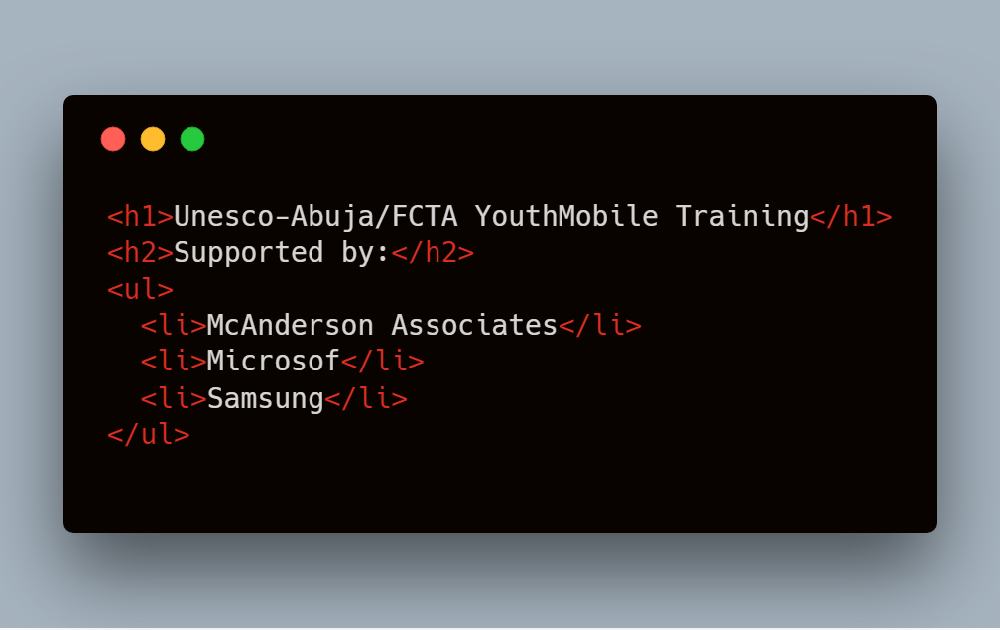

I am Ibrahim Hamza Jirah from Abuja, Nigeria; a graduate of Urban and Regional Planning from Ahmadu Bello University, Zaria which is the largest University in Sub-Saharan Africa. I am also an Alumni of the famous Unesco-Abuja Youthmobile training. During the the programme, I trained for two months as a mobile applications developer and my 'development stack' is the PhoneGap framework. I write in HTML, CSS and JavaScript. I also have experience working with Bootstrap and Wordpress. At the moment, I work as a freelancer mobile/web developer and also help introduce other youth to mobile/web development.
About
Having gone through the Unesco Youthmobile training, it is safe to say that the experience was a roller coaster one. Before I enrolled for the training I had no experience of HTML, CSS and JavaScript; the languages taught at the Unesco-Abuja Youthmobile. Hence, the first few weeks were quite challenging learning these languages despite my basic knowledge in computer appreciation which infact does not equate to doing well in the training but it is a pre-requisite to get started.
Therefore, this application provides aspiring youthmobile trainess with theoretical prep lessons as well as test questions and answers to get started before enrolling for the programme. Prospective 'youthmobilites' will have the opportunity to take lessons and also lessons quiz to be able to measure their knowledge level at the end of the lesson.
This mobile application solely aims to introduce propesctive 'youthmobilites' to the basics of the building blocks (HTML, CSS and JavaScript) of the Unesco-Abuja Youthmobile programme. It is primarily theory based, however, users are free to taste in their text-editors/IDE the code snippets that appear in this application; such as the one below if they ever want to get practical with the lessons.
This mobile application is not limited to proprespetive 'youthmobilites'. This means that anyone interesting in mobile/web development could use the app; as its content is pretty much basic and provides a no-nonsense guide to the building blocks (HTML, CSS and JavaScript) of mobile/web development.
No doubt, it is a general consensus that the ICT holds the key to pretty much everything that we do. Also, most of the Global big brands are owned by techies. In Africa, we seem to lay more emphasis on paper qualification than practical skills, hence, the reason for our backwardness in many disciplines including the ICT. Although we have some brilliant minds from this continent who have made giant strides in ICT, but compare that to other regions and you will agree with me that we are indeed lagging behind; so, it is only logical that Africa deliberately commits resources into training ICT manpower so that we become the makers rather than users of technology. Unarguably, in some parts of the Global North Region, the lesson content of this mobile application may seem irrelevant, as their focus now is on AI (Artificial Intelligence) rather than the traditional mobile/web development that we mostly seem to be involved in, in the Global South Region
Mobile: +234 8038494120
Email: hamzajirah@gmail.com
Twitter: @HamzaJirah1
Github: https://www.github.com/HamzaJirah